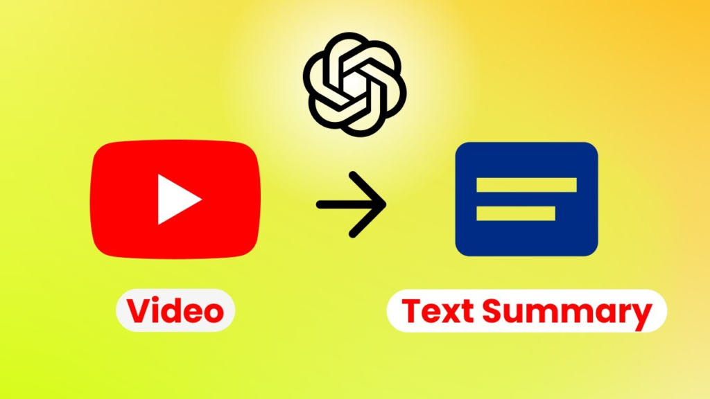
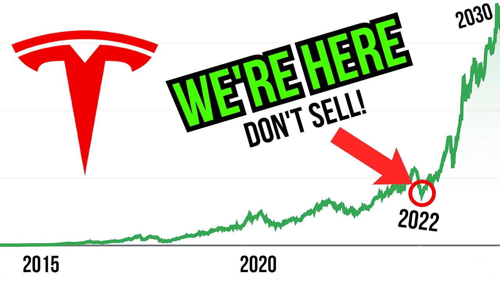

Struggling to secure interviews in today's competitive job market? Introducing ATS Master: Your secret weapon to crafting resumes that beat applicant tracking systems and land you the interview callbacks you deserve. With an 90% success rate, it's your free ticket to standing out among hundreds of applicants

RedShiftFlow is a cutting-edge project revolutionizing the way Reddit data is harnessed for analytics. This comprehensive data pipeline seamlessly extracts, transforms, and loads (ETL) Reddit data into a Redshift data warehouse, ensuring efficient storage and analysis. Leveraging a powerful combination of Apache Airflow, Celery, PostgreSQL, Amazon S3, AWS Glue, Amazon Athena, and Amazon Redshift, RedShiftFlow orchestrates the entire ETL process with precision. From extracting data via Reddit API to transforming it using AWS Glue and Amazon Athena, every step is meticulously managed. With its robust architecture and seamless integration, RedShiftFlow empowers users to derive valuable insights from Reddit data, driving informed decision-making and strategic planning

Embark on a journey through the Twittersphere with TwitMood Detectives, where sentiment analysis meets intrigue! This project delves into the world of Twitter data, utilizing Natural Language Processing techniques to unravel sentiments hidden within tweets. From Named Entity Recognition to sentiment extraction, our code offers a comprehensive toolkit for dissecting text data. With an array of visualizations showcasing sentiment distribution and common words, coupled with the training and evaluation of a cutting-edge NER model, TwitMood Detectives empowers users to decode the language of emotions on Twitter with curiosity and flair.

StreamSummary revolutionizes YouTube content consumption by condensing video transcripts into concise, digestible points. Powered by Google's Generative AI and presented through a user-friendly Streamlit interface, it accelerates comprehension, making key insights easily accessible. From education to research, StreamSummary empowers users to unlock the essence of any video effortlessly.

Unlock the power of real-time data with SparkStream AI Pipeline. This comprehensive guide showcases the seamless integration of TCP/IP Socket, Apache Spark, OpenAI LLM, Kafka, and Elasticsearch. From data acquisition to sentiment analysis, each step is meticulously crafted, enabling efficient data processing and indexing. Dive into the world of Python, Kafka, Spark, and Elasticsearch to revolutionize your data engineering endeavors.
Dive into the heart of The New York Times' discourse with NYT Insight. Analyzing comments and articles spanning January 2017 to April 2018, this project unveils common words, top-rated comments, and Editor's picks while scrutinizing user engagement by usernames and locations. Explore Python-driven analysis for a deeper understanding of NYT's digital dialogue.

Dive into the rhythm of sales with Sales Waves. This project conducts comprehensive time series analysis on store sales data, exploring trends, seasonal patterns, and correlations with external factors like oil prices and holidays. Utilizing R libraries and predictive models, it offers insights into sales dynamics and forecasts future trends, empowering strategic decision-making for stakeholders.

Unraveling Tesla's Rollercoaster: ARIMA, LSTM, and Random Forest Battle for Stock Prediction Supremacy. Navigating the tumultuous seas of Tesla's volatile stock, this project employs cutting-edge ARIMA, LSTM, and Random Forest models. Amidst challenges, LSTM emerges as a beacon, capturing trends and offering glimpses into Tesla's unpredictable financial future. A thrilling journey through predictive analytics in the world of high-stakes stock forecasting.